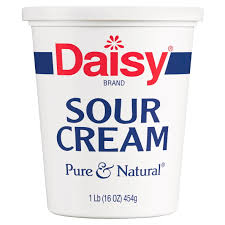

Brown sugar

Substitutions
- Amount : 1 teaspoon
- Combine 1/4 teaspoon baking soda and 1/2 teaspoon cream of tartar. Bake immediately.
Baking soda
Substitutions
- Amount : 1/4 teaspoon
- 1 teaspoon baking powder
Bread Crumbs

Substitutions
- Ground rolled oats or crushed cereal
Butter

Substitutions
- Coconut oil, lard, or margarine can replace butter
Cake Flour

Substitutions
- Amount: 1 cup
- Add 2 tablespoons cornstarch to a 1 cup measuring cup; fill rest of the way with all-purpose flour
Cornstarch

Substitutions
- Amount: 1 tablespoon
- 1.5 tablespoons all-purpose flour
Cream of tartar
Substitutions
- Amount: 1/4 teaspoon
- 1/2 teaspoon lemon juice
Egg

Substitutions
- For yeast breads, cookies, pancakes, or waffles, mix 2 tablespoons ground flax meal and 3 tablespoons cold water. Let the mixture rest for 10 minutes before adding.
Half and Half
Substitutions
- Amount: 1/2 cup
- 1/4 cup milk and 1/4 cup cream, or 1/2 cup non-dairy coffee creamer
Heavy Cream
Substitutions
- Amount: 1/2 cup
- Melt ¼ cup unsalted butter and slowly whisk in ¾ cup whole milk or half-and-half
Heavy Cream
Substitutions
- 1 cup
- Melt 1/4 cup unsalted butter and slowly whisk in ¾ cup whole milk or half-and-half
Honey
Substitutions
- Corn syrup, molasses, maple syrup, or agave nectar
Marzcapone
Substitutions
- Amount: 16oz
- Mix 12 ounces of room temperature cream cheese with 1/4 cup heavy whipping cream and ¼ cup sour cream
Powdrered Sugar
Substitutions
- Grind 1/2 cup granulated sugar in a blender until fine. Multiply as needed to reach the amount called for in the recipe.
Sour Cream

Substitutions
- Plain Yogurt